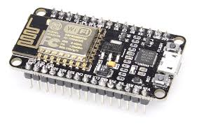

ESP8266-Technical Overview
ESP8266 is a complete and self-contained Wi-Fi network solutions that can carry software applications, or through Another application processor uninstall all Wi-Fi networking capabilities. ESP8266 when the device is mounted and as the only application of the application processor, the flash memory can be started directly from an external Move. Built-in cache memory will help improve system performance and reduce memory requirements. Another situation is when wireless Internet access assume the task of Wi-Fi adapter, you can add it to any microcontroller-based design, the connection is simple, just by SPI / SDIO interface or central processor AHB bridge interface. Processing and storage capacity on ESP8266 powerful piece, it can be integrated via GPIO ports sensors and other applications specific equipment to achieve the lowest early in the development and operation of at least occupy system resources. The ESP8266 highly integrated chip, including antenna switch balun, power management converter, so with minimal external circuitry, and includes front-end module, including the entire solution designed to minimize the space occupied by PCB. The system is equipped with ESP8266 manifested leading features are: energy saving VoIP quickly switch between the sleep / wake patterns, with low-power operation adaptive radio bias, front-end signal processing functions, troubleshooting and radio systems coexist characteristics eliminate cellular / Bluetooth / DDR / LVDS / LCD interference.
Specification of ESP8266
802.11 b / g / n
Wi-Fi Direct (P2P), soft-AP
Built-in TCP / IP protocol stack
Built-in TR switch, balun, LNA, power amplifier and matching network
Built-in PLL, voltage regulator and power management components
802.11b mode + 19.5dBm output power
Built-in temperature sensor
Support antenna diversity
off leakage current is less than 10uA
Built-in low-power 32-bit CPU: can double as an application processor
SDIO 2.0, SPI, UART
STBC, 1x1 MIMO, 2x1 MIMO
A-MPDU, A-MSDU aggregation and the 0.4 Within wake
2ms, connect and transfer data packets
standby power consumption of less than 1.0mW (DTIM3)
Ultra-low power technology
ESP8266 specifically for mobile devices, wearable electronics and networking applications design and make the machine to achieve the lowest energy consumption, together with several other patented technology. This energy-efficient construction in three modes: active mode, sleep mode and deep sleep mode type. When ESP8266 using high-end power management technology and logic systems to reduce non-essential functions of the power conversion regulate sleep patterns and work modes, in sleep mode, it consumes less than the current 12uA, is connected, it consumes less power to 1.0mW (DTIM = 3) or 0.5mW (DTIM = 10). Sleep mode, only calibrated real-time clock and watchdog in working condition. Real-time clock can be programmed to wake ESP8266 within a specific period of time. Through programming, ESP8266 will automatically wake up when detected certain to happen. ESP8266 automatic wake-up in the shortest time, this feature can be applied to the SOC for mobile devices, so before you turn Wi- Fi SOC are in a low-power standby mode. To meet the power requirements of mobile devices and wearable electronics products, ESP8266 at close range when the PA output power can be reduced through software programming to reduce overall power consumption in order to adapt to different applications.
Maximum integration
ESP8266 integrates the most critical components on the board, including power management components, TR switch, RF balun, a peak power of + 25dBm of PA, therefore, ESP8266 only guarantee the lowest BOM cost, and easy to be embedded in any system. ESP8266 BOM is the only external resistors, capacitors, and crystal.
ESP8266 application
Smart Power Plug
Home Automation
mesh network
industrial wireless control
Baby Monitor
Network Camera
sensor networks
wearable electronics
wireless location-aware devices
Security ID tag
wireless positioning system signals